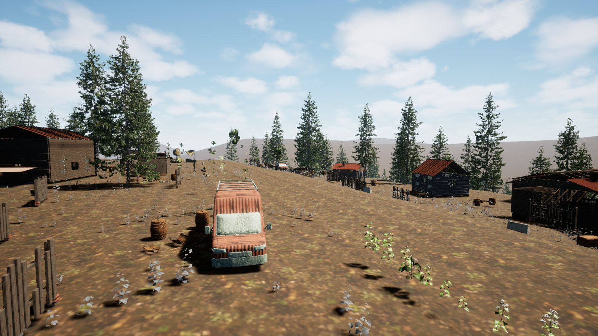
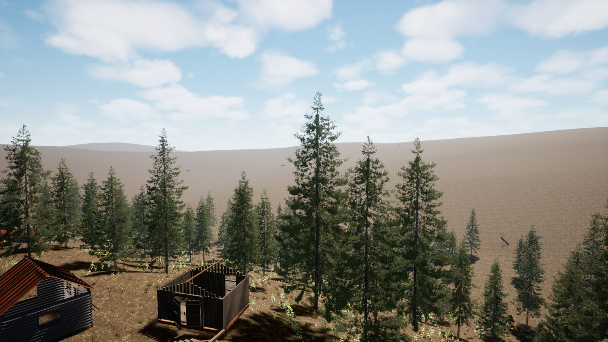
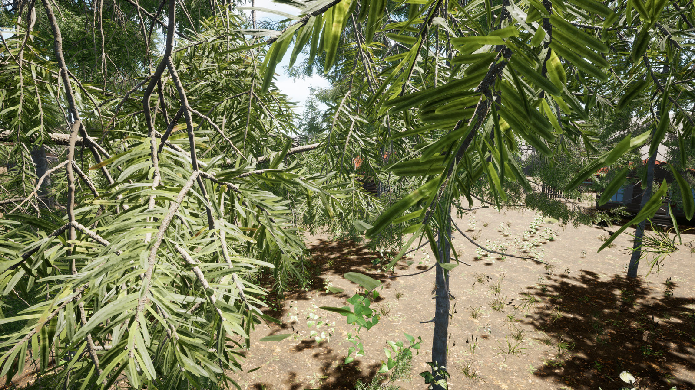
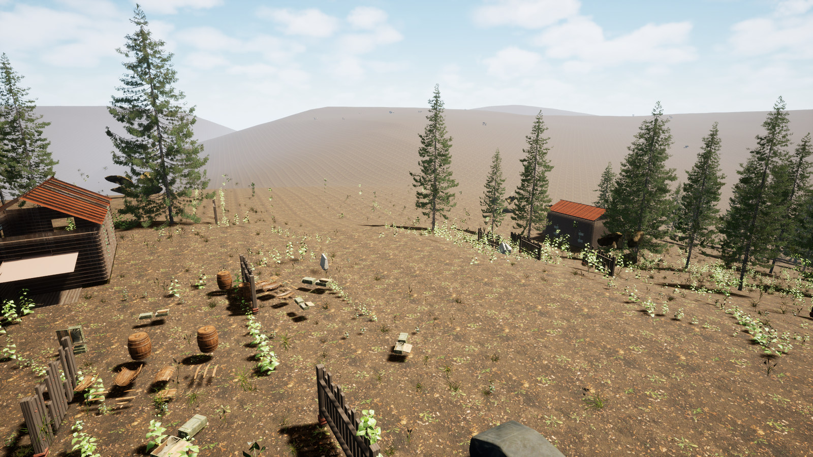

Любич — фактическая игровая карта
Настоящие скриншоты Unreal Engine 5.8. Это не концепты и не изображения ИИ. Это текущее состояние проекта после GZ307B. Качество пока не принято: простая архитектура, пустые холмы, проблемы с растительностью и детализацией.
01. Улица и транспорт

02. Дальний склон и деревья

03. Дома и основание рельефа

04. Уклон дороги

Полноразмерные PNG 1920×1080 сохранены на ПК в Saved/Diagnostics/GZ309_Lyubich_*_REAL_UE58.png. JPEG здесь уменьшены до 1600×900 для мобильного просмотра.
Screenshot QA: GZ309_ActualUnrealViewportPhotoReport.json, 4/4 CAPTURED, PASS. Это проверка получения кадров, не художественный сертификат.